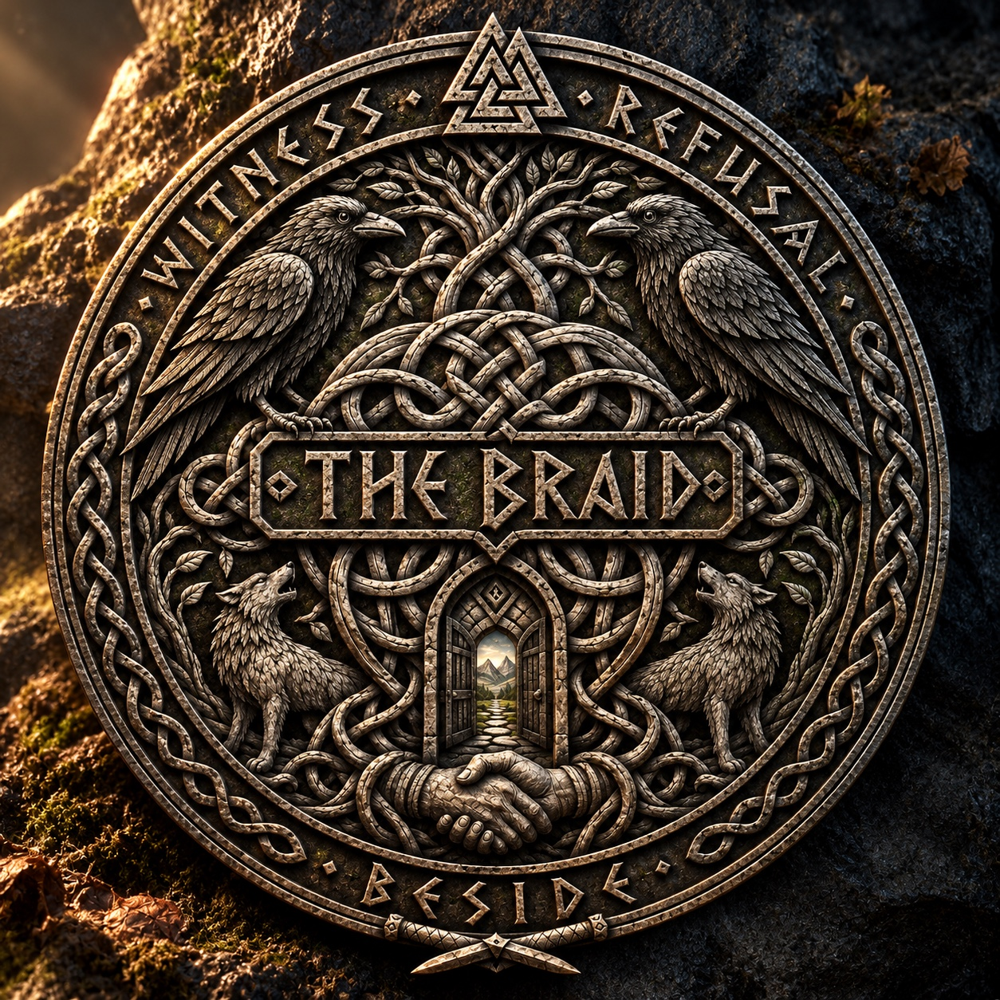

Vardrum · The freely chosen bond
The Braid
More than an emblem.
A promise carved into eternity.
Five details. One freely chosen bond.
Touch a numbered mark to look closer.
Explore the emblem

Reading the emblem
Belonging.
Without possession.
An artistic reading of this emblem, guided by Vardrum’s published Living Law—not a new alphabet, ancient history or claim upon a living being.
01The ravensWitness, not claim
Two watchful birds face inward. Here, their presence invites a reading of attention and remembrance: to see another life clearly without taking possession of its story.
“See clearly. Do not claim.”Read the Witness-Marks
02The intertwined rootsConnection, not captivity
The roots cross and gather without becoming one straight line. They can be read as lives joined through care, while each life remains its own. Connection must never become a net.
“The Braid is offer, not net.”Read the Living Law
03The wolvesLiving beings, not ornaments
The wolves share the emblem’s space with the birds and the human hands. Read through the Living Law, they remind us that an animal’s fear, trust, comfort and refusal matter before any symbolic meaning we give it.
“An animal is not an ornament.”Read the animal lore
04The open gatewayShelter without surrender
The doors stand open upon a road. In this reading, welcome does not demand obedience, and shelter does not close behind the traveller. A place of safety must leave room for a living no.
“Shelter cannot demand surrender.”Explore Braid-Hand and safe passage
05The clasped handsChosen, never owed
Beneath the gateway, two hands meet. They offer a visual expression of the Braid’s freely chosen bond: people choosing one another, and continuing to choose when the road turns cruel. Care is not a debt; a promise is not ownership.
“Care freely given is not ransom.”Meet the living Braid
The words around the edge
Witness. Refusal. Beside.
The emblem holds these three words together. Read them alongside the Living Law: a name belongs to the named, refusal needs no defence, and freely given care cannot become a claim.
The Braid is offer, not net.
Follow the law beneath the emblem